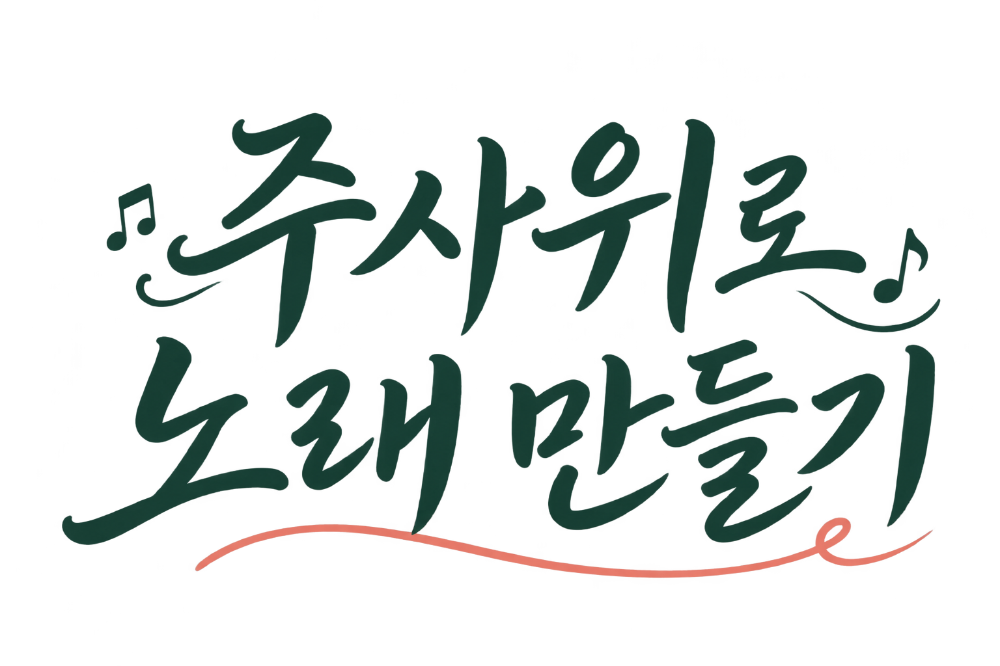

AN EXPLORATION IN SOUND · VOL. 01

마디를 골라 새로운 가락을 만나보세요.
MAKE IT YOURS
WORDS MEET MELODY
A NAME FOR YOUR SONG
제목, 작곡가, 가사를 담은 A4 악보 PDF를 만들어요.
MELODY IN MOTION
검은 화면에 흰색 가사와 음악을 담고 있어요.
KEEP YOUR SONG
검은 화면에 흰색 가사가 음악에 맞춰 나타나요.
이 작업실을 사용하려면 브라우저에서 JavaScript를 켜주세요.